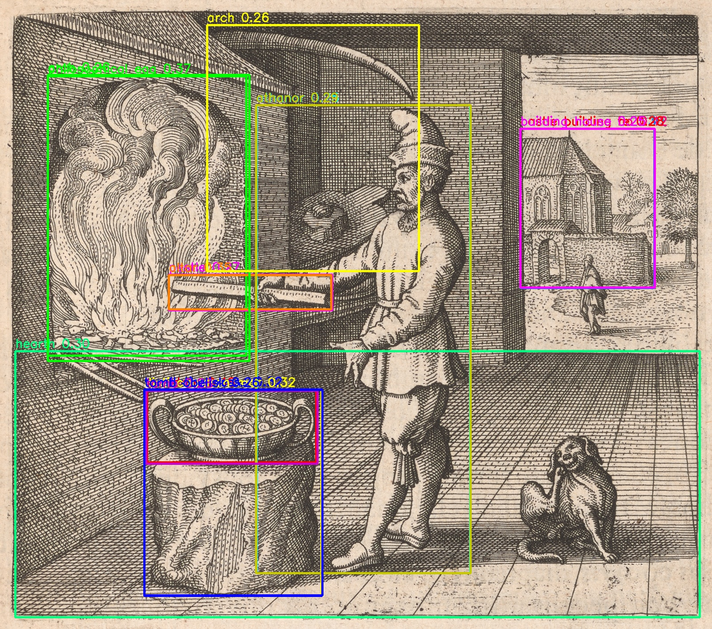

Michael Maier, Atalanta Fugiens (Oppenheim, 1618), Emblem XVIII — furnace region. Prototype extraction + Canny-refinement comparison. Generated by the extraction agent for Ted's review.

English motto: "The fire likes making things fiery, but not, like the gold, making gold." Detected region under review: the furnace/flame opening, upper-left of the plate.

| Raw detector label | Score | What it actually bounds | Proposed corrected label |
|---|---|---|---|
| "philosophical egg" | 0.367 | The furnace/flame opening (correct box, wrong name) | furnace (candidate) |
| "cauldron" | 0.459 | The basin of coins on the pedestal (box looks correct) | vessel / basin (candidate, not extracted in this prototype) |
| "athanor" | 0.253–0.291 | The standing operator's torso (wrong region entirely) | reject — not an apparatus |
| "hearth" | 0.303 | Almost the entire lower half of the plate (floor + vessel + dog) | reject — too coarse to be a region proposal |
This is exactly the detector-mislabeling risk docs/EXTRACTION.md section G predicts for
apparatus categories: GroundingDINO's raw label should never be trusted as the identification.
The furnace bbox used for every mask below is [107, 171, 446, 628] (x, y, w, h),
taken from the "philosophical egg" detection because that box — not its label — is the correct
region.
All masks below segment the same bbox. "Baseline" is the existing, completely unmodified
detector → segmenter → postprocessor chain. Everything else is a variant produced by the new
scripts/pipeline/edge_refiner.py module (or, for SAM2, a different segmenter run through
the same shared postprocessing). Pixel counts and deltas are in
variant_pixel_counts.json.

| Technique | Δ px vs baseline | Verdict | Why |
|---|---|---|---|
| Boundary snap — plain Canny | +0.13% | Didn't help | Plain Canny on this plate is so dense with hatching noise (see supporting sheet) that nearly every pixel has an "edge" within the 6px search radius, so snapping had no net effect — it did not distinguish the true furnace boundary from surrounding hatching. |
| Boundary snap — adaptive Canny | +0.13% | Didn't help | Per-tile adaptive thresholding produced an almost identical edge map to plain Canny in this region — local contrast is already high and fairly uniform across the flame, so tiling gained nothing here. (Might still help on a plate with real illumination falloff; not this one.) |
| Contour-informed bridge cut | −10.5% | Helped, partially | Visibly trimmed the baseline's leak into the sloped brick roof above the furnace mouth (compare tile 1 vs tile 4 in the comparison sheet). Gating the cut to the mask's already-thin regions kept it from being derailed by Canny's general noise. Did not remove the leak entirely. |
| Erosion guard | +5.16% | Unclear / no measurable help | Mask grew slightly but the shape is visually almost identical to baseline — no thin feature (flame tongue, rod tip) is visibly recovered that baseline was missing. The growth looks like noise-following inflation rather than a genuine thin-linework rescue. |
| SAM2-hiera-tiny (exploratory) | −31.8% | Helped, clearly | Run through the identical postprocessing chain as the baseline, SAM2's own mask does not leak into the sloped roof at all — see tile 6. This is the single most convincing result in this prototype, but see the caveat below before trusting it. |

An unconditional SAM automatic-mask-generation pass (16 points/crop, no text prompt) found
18 proposals over the whole plate in 24s on CPU. It cleanly outlined the vessel/basin
(a tight, correct silhouette — better than the prompt-driven baseline's box-based cutout would
likely give), the sloped furnace roof, the doorway, individual floor tiles, and background
buildings — but at this point density it did not propose the flame/furnace-opening
region as a coherent object at all. The densest, most textured region on the plate is exactly
where AMG's coarse point grid missed. A denser points_per_crop would likely find it,
at higher compute cost; not tested here (see report for the "not tested" list).
| Region | Proposed label | Confidence | sourceTradition | Machine-recommended disposition | Ted's decision |
|---|---|---|---|---|---|
| bbox [107,171,446,628] — furnace opening, baseline mask | furnace | 0.367 (detector, mislabeled as "philosophical egg") | allegorical | machine-proposed — region looks right, baseline mask leaks into background roof; consider using the SAM2 or bridge-cut variant instead of raw baseline | — (open) |
| bbox [330,876,380,163] — vessel/basin on pedestal | vessel / basin (cauldron) | 0.459 (detector) | allegorical | machine-proposed — bbox looks correct; not segmented or postprocessed in this prototype (out of scope, one apparatus motif was the target); AMG's unconditional mask on this same region (see supporting sheet) is a promising starting point for a follow-up | — (open) |
| bbox [576,236,480,1052] — "athanor" detection | — | 0.253–0.291 (detector) | — | machine-proposed: reject — bounds the standing operator, not any apparatus | — (open) |
images[] — it is blocked on this decision and does not yet exist in
final form because the apparatus id was not known before this prototype ran.